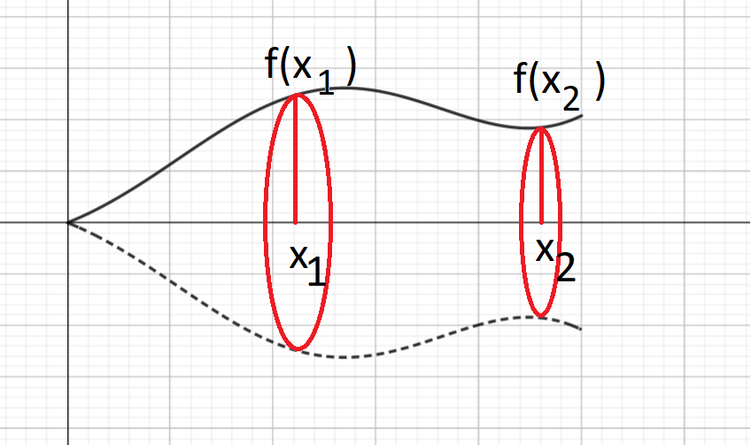
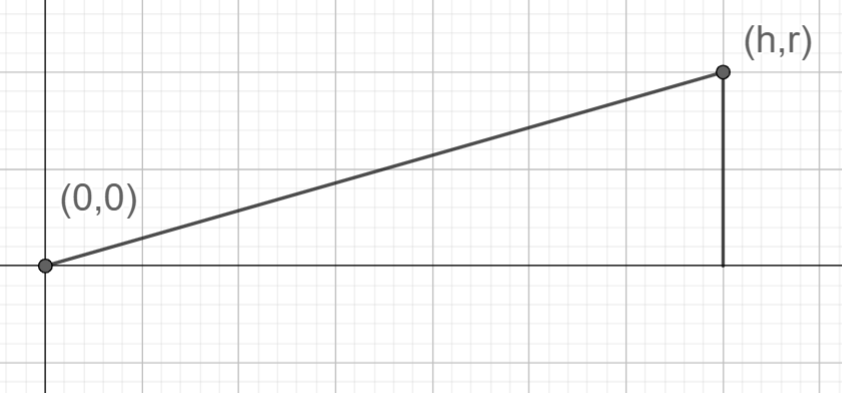
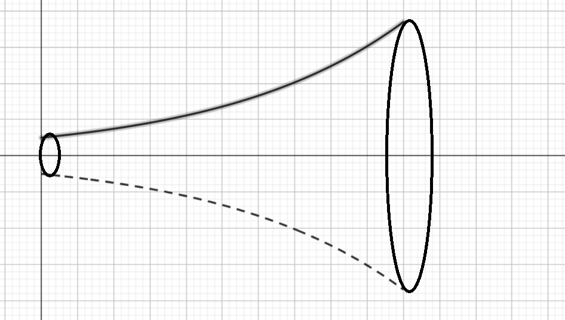

Pyörähdyskappaleet
Contents
Pyörähdyskappaleet#
Tarkastellaan vielä erityistapauksena määrätyn integraalin sovelluksista pyörähdyskappaleen tilavuutta ja pinta-alaa. Pyörähdyskappale on jokin kolmiulotteinen muoto, joka on saatu aikaan siten, että jonkin funktion kuvaaja pyörähtää \(x\)-akselin ympäri. Funktion kuvaaja muodostaa siten kappaleen seinät.

Tilavuus#
Kun funktion kuvaaja pyörähtää \(x\)-akselin ympäri, niin joka kohtaan muodostuu ympyrä, jonka säde on funktion arvo \(f(x)\). Oheisessa kuvassa on esitetty pyörähdyskappaleen poikkileikkaukset kohdissa \(x_1\) ja \(x_2\). Kohdassa \(x_1\) poikkileikkausta vastaavan ympyrän säde on \(f(x_1)\), kohdassa \(x_2\) poikkileikkausta vastaavan ympyrän säde on \(f(x_2)\). Yleisesti pisteessä \(x_i\) ympyrän pinta-ala on \(A_i=\pi f(x_i)^2\).
Oletetaan, että kappaleen seinämät muodostava funktio alkaa pisteestä \(x=a\) ja päättyy pisteeseen \(x=b\). Kun lasketaan koko pyörähdyskappaleen tilavuutta \(V\), niin kappale jaetaan äärettömän moneen, äärettömän ohueen viipaleeseen. Jokaisen viipaleen pinta-ala vastaa ympyrää, jonka säde on funktion arvo tietyssä pisteessä. Jokaisen ympyrän paksuudeksi ajatellaan hyvin pieni muutos vaaka-akselilla, \(\text{d}x\). Äärettömän monta kappaletta äärettömän ohuita viipaleita saadaan laskemalla integraali:
\(\int_a^b \pi f(x)^2~\text{d}x\)
Esimerkki
Kartion tilavuuden laskukaava on \(V=\frac{1}{3} \pi r^2 h\), missä \(r\) on kartion pohjaympyrän säde ja \(h\) on kartion korkeus. Johda tilavuuden laskukaava integroimalla. Kuvassa on esitetty kartion seinämän muodostavan funktion kuvaaja. Kartio on kyljellään siten, että sen kärki on pisteessä (0,0).

Ratkaisu
Muodostetaan ensin funktion \(f(x)\) lauseke. Kartion seinämän etäisyyttä kartion korkeusjanasta (kuvaajan \(x\)-akselista) kuvaa suora muotoa \(y=ax+b\). Koska kärki on origossa, niin leikkausvakio on \(b=0\). Kulmakertoimeksi saadaan
\(a=\frac{r-0}{h-0}=\frac{r}{h}\).
Funktio on siis \(f(x)=\frac{r}{h}x\), ja tilavuuden laskukaavassa tarvittava \(f(x)^2=\frac{r^2}{h^2}x^2\).
Lasketaan määrätty integraali pisteestä \(x=0\) pisteeseen \(x=h\):
\(\begin{align} V & = \int_0^h \pi \frac{r^2}{h^2}x^2~\text{d} x = \pi \frac{r^2}{h^2} \int_0^h x^2~\text{d}x \\ & = \pi \frac{r^2}{h^2} \left(\frac{1}{3}h^3-\frac{1}{3} 0^3 \right) \\ & = \pi \frac{r^2}{h^2} \cdot \frac{1}{3} h^3 = \frac{1}{3} \pi r^2 h \end{align}\)
Esimerkki
Laske pyörähdyskappaleen tilavuus, kun sitä rajoittaa käyrä \(f(x)=e^x\) välillä \(0 \leq x \leq 2\).

Ratkaisu
\(\begin{align} V & = \int_0^2 \pi (e^x)^2~\text{d}x \\ & = \pi \int_0^2 e^{2x}~\text{d}x \\ & = \pi \cdot \left( \frac{1}{2}e^{2\cdot 2} - \frac{1}{2} e^{2\cdot 0} \right) \\ & = \frac{\pi}{2} (e^4-e^0) = \frac{\pi}{2} (e^4-1) \approx 84.2 \end{align}\)
Pinta-ala#
Pyörähdyskappaleen pinta-ala lasketaan samalla periaatteella kuin tilavuus: jakamalla kappale äärettömän moneen, hyvien ohueeseen kiekkoon, joiden säteet ovat funktion arvoja. Pinta-alan ajatellaan siis muodostuvan äärettömän monesta hyvin kapeasta “vyöstä”, jotka kiertävät pyörähdyskappaleen ympäri.
Kun pyörähdyskappaletta rajoittaa funktio \(f(x)\) välillä \(x_1 \leq x \leq x_2\), niin pyörähdyskappaleen pinta-ala on
\(A=2\pi \int_{x_1}^{x_2} |f(x)|\sqrt{1+[f'(x)]^2}~\text{d}x\)
Perustelu
täydentyy
Esimerkki
täydentyy
Ratkaisu
Täydentyy